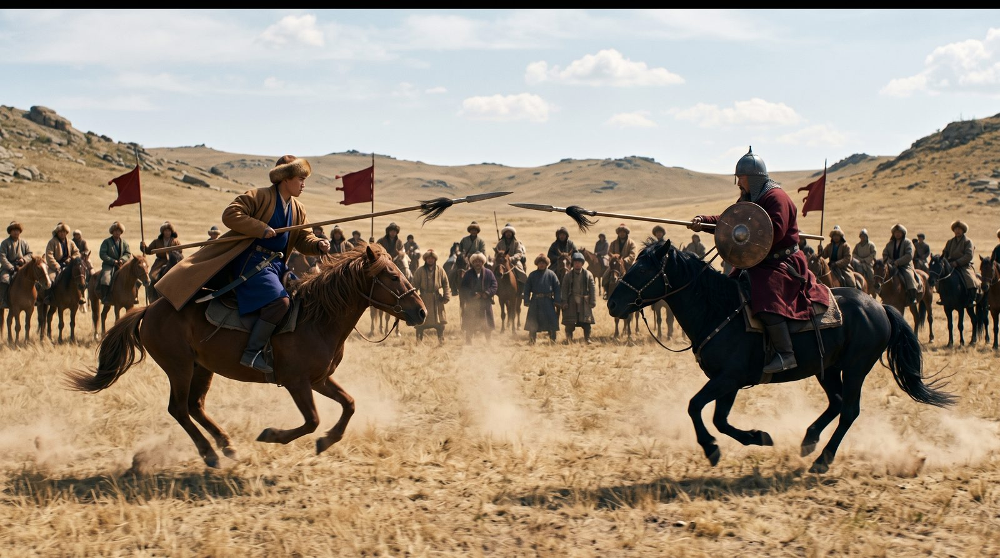
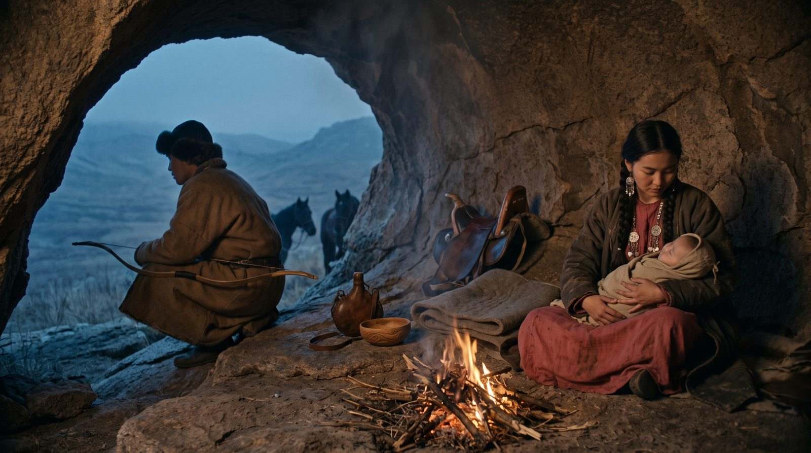
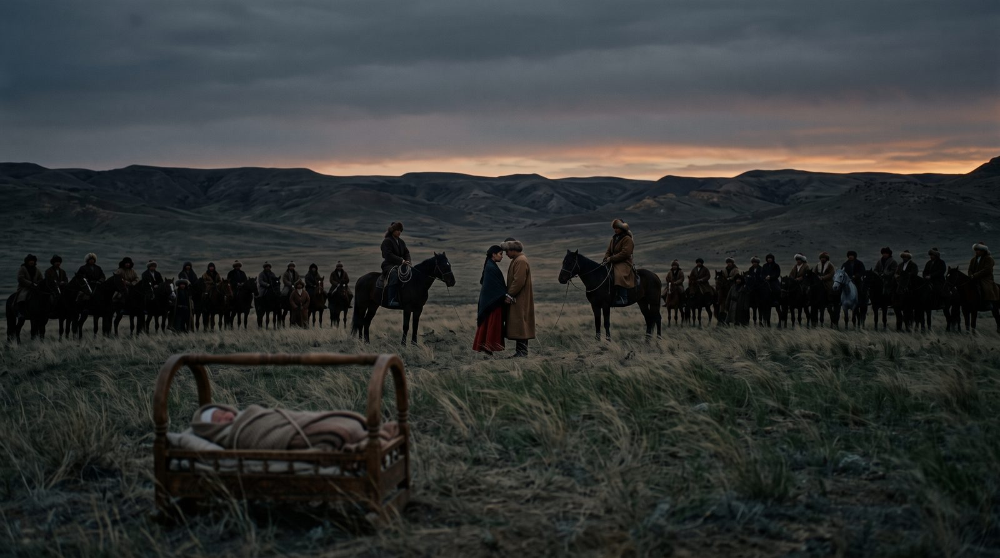

Сюжет
От поединка до башни над могилой
Поединок и побег
Кебек побеждает Есена на глазах у двух родов. По закону Еңлік остаётся чужой невестой, поэтому ночью они уходят в горы. В пещере над долиной у них рождается сын.
Суд и приговор
Найманы требуют расправы. В юрте Кеңгірбая бии спорят о милосердии и о кровной мести, и судья отдаёт беглецов. Их настигают, привязывают к хвостам лошадей и хоронят вместе. Ребёнка оставляют в степи. Через два века над могилой стоит башня, и к ней всё ещё привязывают ленты.


